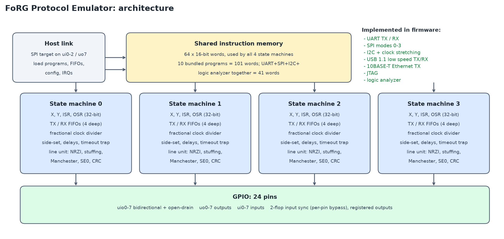
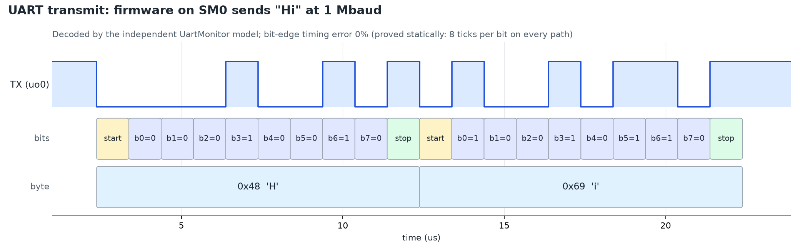
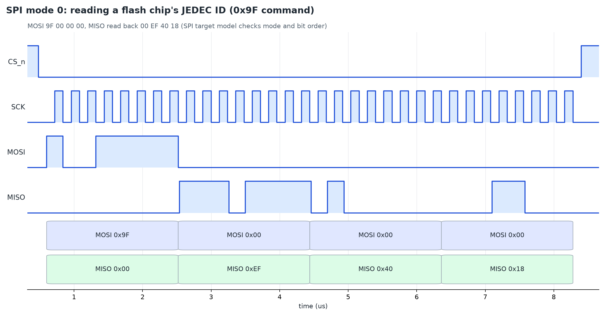
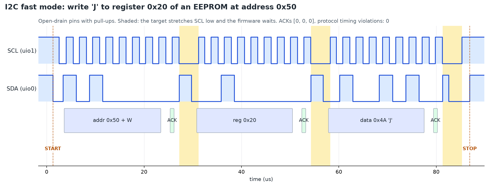
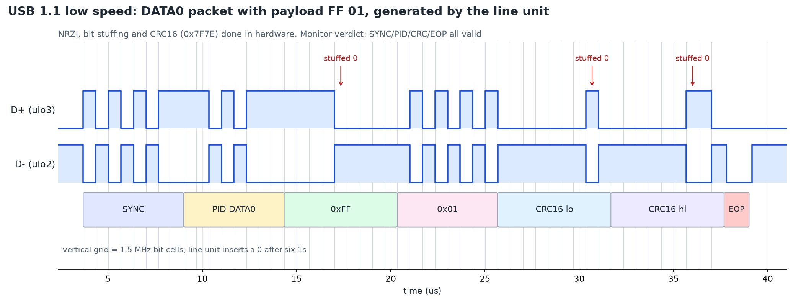
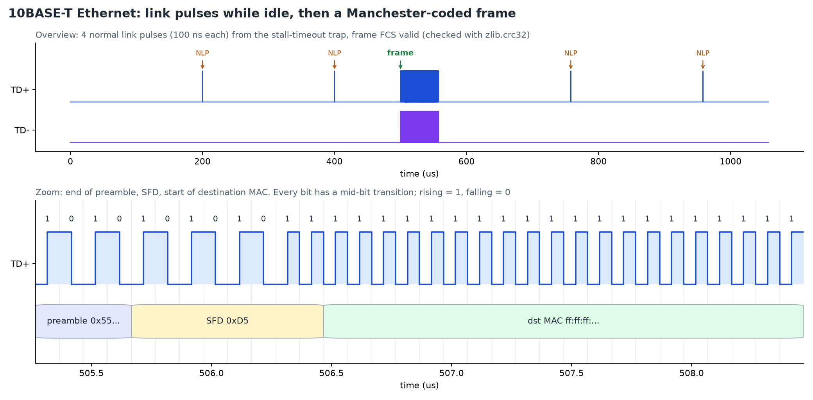
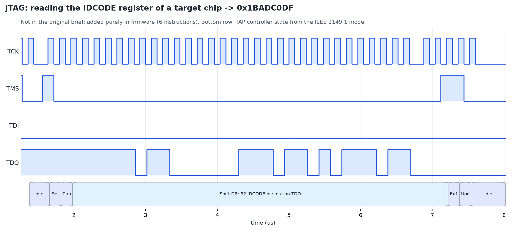
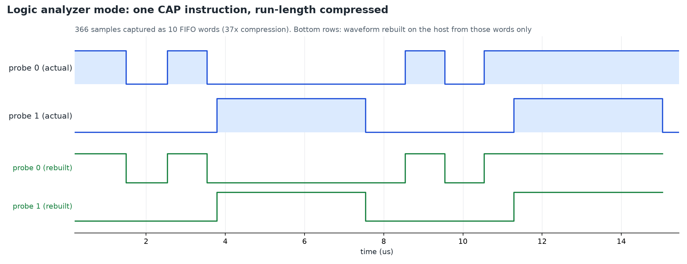
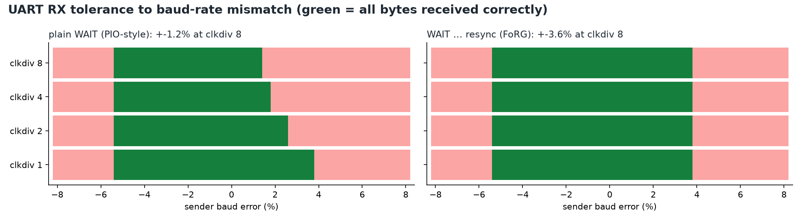
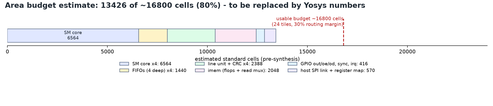

Every waveform below comes from the cycle-accurate golden model running real firmware. The annotations come from separate protocol reference models that only look at the pins.
Four cycle-exact state machines share one program memory. Each has a hardware line unit that does the bit-level work USB and Ethernet need.

Firmware sends "Hi". An independent receiver model decodes it and measures bit timing.

Reads a flash chip's ID. The bottom rows show the bytes on each data line.

Writes to an EEPROM model, which stretches the clock (shaded) to slow the controller down.

A full USB data packet. The line unit inserts stuffed bits and the CRC16 automatically.

Link pulses while idle, then a real Ethernet frame. The zoom shows Manchester coding.

Reads the ID register of a chip through its debug port. Added using only firmware.

One instruction captures pins with run-length compression. The host rebuilds the waveform.

Thousands of simulated frames over a baud-error sweep. Left: a PIO-style wait. Right: FoRG's resync wait.

Hand estimate of the chip area against the 6x4 tile budget.

For each program, every possible path through the code is checked to take exactly the required number of cycles.
| firmware | words | proofs | result | details |
|---|---|---|---|---|
| eth10_tx | 17 | 2 | pass | tp_idl -> start: 17 ticks nlp -> start: 8 ticks |
| i2c_master | 27 | 2 | pass | start -> byte: 8 ticks low -> bit: 4 ticks |
| jtag | 6 | 1 | pass | bit -> bit|done: 4 ticks [may stall at pc [1]; bound assumes no stall] |
| logic_analyzer | 1 | 0 | pass | |
| spi_cpha0 | 7 | 1 | pass | bit -> bit|done: 4 ticks [may stall at pc [2, 3]; bound assumes no stall] |
| spi_cpha1 | 7 | 1 | pass | bit -> bit|done: 4 ticks [may stall at pc [2, 3]; bound assumes no stall] |
| uart_rx | 9 | 2 | pass | start -> bit: 12 ticks [may stall at pc [0]; bound assumes no stall] bit -> bit|check: 8 ticks |
| uart_tx | 6 | 3 | pass | start_bit -> bit: 8 ticks bit -> bit|stop_bit: 8 ticks stop_bit -> start_bit: 8 ticks [may stall at pc [0]; bound assumes no stall] |
| usb_ls_rx | 5 | 0 | pass | |
| usb_ls_tx | 16 | 2 | pass | se0 -> j: 16 ticks (80..80 sys cycles) j -> start: 8 ticks (40..40 sys cycles) |